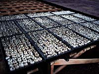
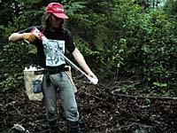

Planting trees can be the last of many varied and complex steps in the process of regenerating a cut or burned forest. |
Before a seedling is put into the ground, a great deal of research and development has already gone into making sure the new tree will grow as straight, healthy and fast as possible. |
How is this achieved?
-
Using Select Trees - Trees of superior quality are selected
in forest stands across the province and are used for seed collection.
Seed Identification - The seed that is collected is identified by its place of origin and germinated in seedling nurseries.
Planting - The seedlings are then planted in areas of similar by latitude, longitude, elevation and climate to their place of origin.
 Over 12 million seedlings have been produced in the province in one year. It is the goal of research that all seedlings are of the highest quality so that after planting they survive and grow as quickly as possible, reducing the rotation time of the plantation. |
Seedling quality can be improved by propagating genetically superior trees. This is achieved by:
- grafting cuttings of superior trees onto the root stalk and
subsequently planting them in seed orchards like the seed orchard
which has been established near Prince Albert.
- cloning, which involves rooting cuttings that have been taken from high quality trees. These trees are then a carbon copy of their trees of origin. The rooted cuttings are subsequently planted in the field.

Ecosystems studies are conducted to assist the forest manager in optimizing the use of the forest sites. Sites are classified from best to poorest: Site I (best site), Site II and Site III (poorest site). The type of site is an important factor in determining both the harvesting technique that can be used, and, after harvesting, the type of site preparation required for regeneration with a specific species. |
 Normally, sites are planted back to the species removed. In some instances, when soil, water, and climate conditions warrant, an alternate species more suited to the site and human needs will be planted. |

Seedlings must be planted where they will be able to get a decent start. This means that the site must be prepared prior to planting, either by mechanical means (shown left), chemical means or prescribed burning. |
The first few years following establishment of the young seedlings are critical to the success of a young tree. Grass, brush, and fast-growing species of trees undesirable to forest managers can choke off all the light and moisture to the point where the seedling is smothered. In order to prevent this, the surrounding vegetation must be hand-cleared or treated in some way to reduce competition from the other vegetation. The seedlings must be carefully tended. |

The objective for the forester is to get the new stand to a point where it can successfully compete on its own as quickly as possible. This is known as the free-to-grow stage. In nature, because succession involves an entire community and not just a single species, it often takes many years for new seedlings to get well enough established to be able to grow. |